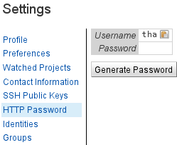
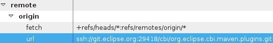
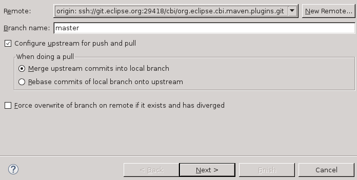
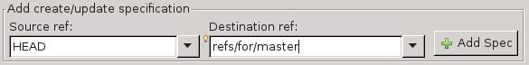
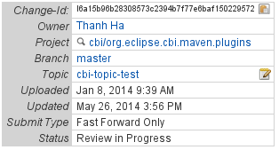
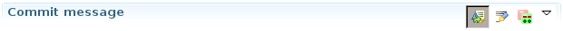

Gerrit Overview
Gerrit is a Web based code review system that is being deployed to projects at Eclipse. The service is available at
https://git.eclipse.org/r/
Creating and configuring your Gerrit account
Gerrit does not know your account exists until you login for the first time. Simply login to Gerrit once if you have
not already did to initialize your Gerrit account. You can login at https://git.eclipse.org/r/ using your eclipse.org
credentials.
For checking out repositories, Gerrit does not let you use the same password as your eclipse.org account password.
Instead if you are using SSH authentication Gerrit requires you provide it with your SSH public key. If you are using
HTTP authentication then Gerrit will generate a random password for you.
SSH key based authentication is a bit more secure and easier as you do not need to save your password on your system.
GitHub has a pretty decent documentation on how to Generate SSH key pair if you are interested in trying this method
https://help.github.com/articles/generating-ssh-keys
Upload your SSH keys
If you would like to use SSH then you must upload your SSH public key to the Gerrit server.
- Login to Gerrit
- Click your name at the top right
- Click Settings > SSH Public Keys (https://git.eclipse.org/r/#/settings/ssh-keys)
- Click Add Key ..
- Paste the text of your public key into the text box
- Click Add
Your key may look something like this:
ssh-rsa AAAAB3NzaC1yc2EAAAADAQABAAABAQDEELNeLbxkyFI3JfIC7sutF2NLJwizVDDljw6h2KB9dwUrVGUBQM7r9+4Ndp/ojJ+lEk8OuNh+Kicc0hwHLHz+v81ejN62yQe+c16fvard6MdkrA3xr1WuvNZDvBQhVUkNmEoYYa3C+GpvEmQssvrPhpU0RD6AELzBnrG+VME9Vb2ObvIHKj8OulxD96zk2GTRHM0KaR9XhLPsLQ7U0ML715BDA3k1Zf66DOmZiyzckZZD+YtiV3qnAfwW5hU9Xi+M92vqf5Z5mC7t6aX9Pu5TXb614NE1GKUZ6yDEWFLspo4ihl+X2pA2oMONjbgOG5gqlnBAArsG0WP6dVF+jKQ5 your_email@example.com
Note: The last part where it says your_email@example.com is actually just a comment and can be anything you want here.
Typically I put my email address or some word to identify who’s key this is or where it came from in case you
have multiple keys.
Generate HTTP password
If using SSH key based authentication is not possible for you, or you would rather use a password. You will need to tell
Gerrit to generate a random password for you before you can use password authentication.
- Login to Gerrit
- Click your name at the top right
- Click Settings > HTTP Password (https://git.eclipse.org/r/#/settings/http-password)
- Click Generate

This random password will be the password you use to work with Git via Gerrit URLs. If you are ever worried that your
password is compromised simply clear your password and re-generate a new one.
Understanding Eclipse Git and Gerrit URLs
At Eclipse we support 3 types of URLs git://, ssh://, and https://.
You can find the Git URLs via cGit at https://git.eclipse.org/c/
For Git the URLs are:
- git://git.eclipse.org/gitroot/project/repo.git
- ssh://git.eclipse.org/gitroot/project/repo.git
- http://git.eclipse.org/gitroot/project/repo.git
You can find the Gerrit URLs via Gerrit at https://git.eclipse.org/r/
For Gerrit the URLs are:
- git://git.eclipse.org/gitroot/project/repo
- ssh://git.eclipse.org:29418/project/repo
- https://git.eclipse.org/r/project/repo
git:// url
The first is a read-only URL via the git:// protocol. This URL is git://git.eclipse.org/gitroot/project/repo.git
and is the same no matter if you copied it from cGit or Gerrit.
- project is a directory containing all the repos for a specific project. For example the CBI project is under
/gitroot/cbi/repo.git - repo.git is the specific git repository for a project, some projects may have more than 1 repo
- Tip: The final “.git” part of the URL is actually optional
ssh:// urls
Next the ssh:// protocol URLs are slightly different depending on if you are pulling from Git or Gerrit. If your project
is Gerrit enabled you should prefer the Gerrit URL otherwise you won’t be able to push to the repository.
The reason the URLs are different is because Gerrit provides it’s own SSH service on port 29418 and does not use the
same SSH service that is on the default port on git.eclipse.org.
Gerrit trims the “/gitroot” portion of the URL and adds a port “:29418” in it’s place. This is the only difference
between the 2 URLs.
http:// urls
Again the URLs are slightly different depending on if you are using Git or Gerrit. If your project is Gerrit enabled
you should prefer the Gerrit URL otherwise you won’t be able to push to the repository.
The reason the URL pattern is different here is because Gerrit hosts it’s own HTTP service for Git. The difference here
is Gerrit only supports https (secure) and again Gerrit trims the “/gitroot” part of the URL and replaces it with “/r”
which is the Gerrit web URL.
Updating a existing Git repo to use Gerrit URL
If you have already cloned a Git project at Eclipse you do not need to reclone, simply update your Git URLs to point
to the new Gerrit URLs and you can start using Gerrit.
Using Git CLI
git remote set-url origin <gerrit-url>
Using EGit
- Navigate to the Git perspective (Window > Open Perspective > Other > Git)
- Right click on the repo you wish to modify
- Click Properties
- Under Configuration tab, look for remote > origin > url
- Enter the new URL
- Click Apply
- Click Ok

Checkout a Gerrit Project
If you have not already checked out the repository you want to work on then you can clone the repo directly.
Using Git CLI
git clone <gerrit-url>
Using EGit
- Navigate to the Git perspective (Window > Open Perspective > Other > Git)
- Click the Clone Repository button in the Git Repository view
- Enter the Gerrit URL into the URI link
- Enter your credentials if applicable (If you are using SSH you’ll have to configure your public/private keys)
Push to Gerrit
Pushing to Gerrit is no different than pushing to a regular Git repo the only difference is you are pointing to a new
URL so make sure your URL is configured currently. Simply push as you would with any other repository and your changes
will go directly into the repo.
I like to be as specific as possible so I always push a branch specifically.
Using Git CLI
git push origin master
Change master to the name of the branch you want to push to.
Using EGit
- Navigate to the Git perspective (Window > Open Perspective > Other > Git)
- Right click on the repo you are making changes to
- Click Push branch…
- Ensure branch is master (or whatever branch you’re pushing)
- Click Next (Note this will immediately push your branch!)

Push to Gerrit for Review
Pushing for Review is a feature of Gerrit which allows you to push a patch online for developers to review. This is the
method you should use to push if you are not a committer on the project or if you’d like a second opinion on your patch
before it goes live.
Gerrit provides a special refspec to push your changes to which will instead of merging into the upstream repository
commits it to be reviewed. This refspec is refs/for/* if where the * tells Gerrit which branch you want your patch
to be reviewed against. For example if you’d like to push your patch to be reviewed against the master branch then
you push to refs/for/master. Change master to be any other existing branch online for it to be reviewed against
another branch.
In the example below we are pushing a special Git keyword called HEAD. In this case this simply means the latest
commit on the current branch you are on.
Using Git CLI
git push origin HEAD:refs/for/master
Change master to whichever branch you want to push to.
Using EGit
- Navigate to the Git perspective (Window > Open Perspective > Other > Git)
- Right click on the repo you are making changes to
- Click Remote > Push…
- Select Configure Remote Repository and choose origin
- Click Next
- Set Source ref to HEAD
- Set Destination ref to refs/for/master (Change master to the branch you want the patch to be reviewed against)
- Click Add Spec
- Click Finish

Note: After you push Gerrit will provide you with a link to your review. Note this down as it will be the link to
your patch should you need it. If you are working on a Bug it is good practice to link to this URL in the
Bug. The URL should look similar to this https://git.eclipse.org/r/24873/
Updating a patch for Review
When your code is reviewed you might have some feedback asking you to address some issues with your code. In this case
you will need to update your patch with a new version that addresses feedback comments.
The Gerrit way to update patches is to amend your existing patch commit continuously until it is accepted. When you
amend your patch though you need to ensure that your commit message contains the correct Change-Id field. This
field is how Gerrit knows that you are updating an existing Gerrit review. This is a unique string that helps Gerrit
identify an existing Review and update it. You can find the Change-Id on the review page for your patch near the
top you should see a box similar to this:

Using Git CLI
git add <files>
git commit --amend
Using EGit
- Navigate to the Git perspective (Window > Open Perspective > Other > Git)
- Right click on the repo you are making changes to
- Click Commit…
- Select the files you modified
- Check the Amend Previous Commit button

Amended Commit message
Your amended commit message should look similar to the following:
Bug 420891 - [CBI] Builds too many projects
According discussions in Bug 420891 it seems CBI build is building too
many projects in JSDT. This patch removes the development directory from
the build list which does not need to be built.
Change-Id: I5bc9dfe47569e854b40d4fe9a400bb1dd16781d6
Signed-off-by: Thanh Ha <thanh.ha@eclipse.org>
Once amended you can push using the same method as in the previous section Push to Gerrit for Review.